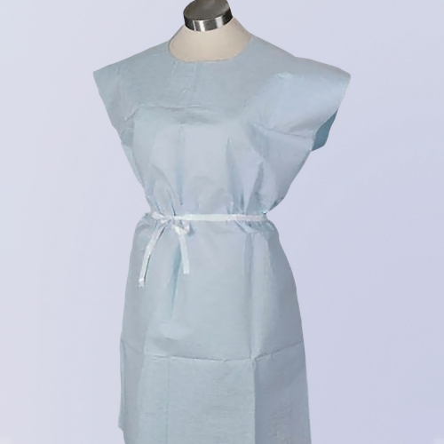

Disposable isolation gowns serve as the primary fluid and particulate barrier for healthcare workers across a broad spectrum of clinical and non-clinical environments. From routine patient care in hospitals to infection isolation rooms, emergency response scenarios, veterinary clinics, and food processing facilities, the correct selection and use of isolation gowns directly impacts worker safety, patient outcomes, and regulatory compliance. The global disposable isolation gown market has grown substantially over the past several years, driven by heightened infection prevention awareness, expanded regulatory requirements in healthcare settings, and the adoption of standard precautions across emerging healthcare systems. Procurement teams face the challenge of selecting gowns that balance protection level, wearer comfort, regulatory compliance, and total cost — decisions that require understanding the technical specifications, standards, and application requirements that govern this product category.
Isolation Gowns vs Surgical Gowns: Understanding the Difference
Before selecting a gown, it is essential to distinguish between isolation gowns and surgical gowns — two product categories that serve overlapping but distinct purposes:
| Aspect | Isolation Gown | Surgical Gown |
|---|---|---|
| Primary purpose | Protect wearer from fluids and contaminants | Protect both wearer and patient from cross-contamination |
| Coverage | Back typically open or non-critical zone | Full coverage including critical zones (chest, arms) |
| Fluid barrier | Front and sleeves rated; back may be unrated | Entire front and sleeves must meet barrier standards |
| Regulatory standard | ANSI/AAMI PB70 (US), EN 13795 / EN 14126 (EU) | ANSI/AAMI PB70 (US), EN 13795 (EU) |
| Typical use | Precautions, lab work, emergency, non-surgical | Operating room, sterile surgical procedures |
| Sterility | Typically non-sterile | Sterile (for surgical use) |
This article focuses on disposable isolation gowns, which are non-sterile garments designed to protect healthcare workers from fluid exposure and contamination during patient care, laboratory work, and other non-surgical clinical activities.
AAMI PB70 Protection Levels
The ANSI/AAMI PB70 standard classifies liquid barrier performance of isolation and surgical gowns into four levels. Selecting the correct level for each clinical scenario is the single most important procurement decision:
| Level | Barrier Protection | Test Method | Typical Use Case |
|---|---|---|---|
| Level 1 (Minimal Risk) | Basic fluid resistance | Water impact test — no penetration at 20 cm water column | Basic care, standard isolation, visitor gowns, non-clinical environments |
| Level 2 (Low Risk) | Low fluid resistance | Hydrostatic pressure test — passes at 20 cm water column | Blood draw, suturing, intensive care unit (ICU) work, laboratory processing |
| Level 3 (Moderate Risk) | Moderate fluid resistance | Hydrostatic pressure test — passes at 50 cm water column | Arterial blood draw, trauma care, emergency room, IV insertion, orthopaedic procedures |
| Level 4 (High Risk) | High fluid resistance with viral penetration resistance | Hydrostatic pressure + Phi-X174 bacteriophage penetration test | Long, fluid-intensive procedures, infectious disease isolation, pathogen exposure, surgical assist |
Each level requires increasingly rigorous testing. Level 1 gowns need only pass a water impact test, while Level 4 gowns must demonstrate resistance to viral penetration using the Phi-X174 bacteriophage test — the most stringent barrier performance requirement in the standard. Healthcare facilities should map their clinical activities to the appropriate AAMI level and stock gowns accordingly, rather than adopting a single gown type for all applications.
Material Construction and Nonwoven Technologies
Disposable isolation gowns are manufactured from nonwoven fabrics — engineered materials made from fibres bonded together by chemical, mechanical, heat, or solvent treatment rather than weaving or knitting. The choice of nonwoven technology directly affects the gown's barrier performance, breathability, strength, and cost:
Spunbond (SB)
Spunbond fabrics are produced by extruding continuous filaments and bonding them into a web. They offer good strength and moderate barrier performance at the lowest cost. SB gowns are suitable for Level 1 applications where fluid exposure risk is minimal — basic patient care, visitor gowns, and non-clinical environments.
Spunbond-Meltblown-Spunbond (SMS)
SMS is a three-layer composite: two outer spunbond layers provide strength and durability, while the middle meltblown layer delivers the critical fluid barrier. The meltblown layer consists of ultrafine microfibres that create a dense, tortuous path that blocks liquid penetration. SMS is the dominant material for Level 2 and Level 3 isolation gowns and offers the best balance of protection, breathability, and cost for most healthcare applications. Common SMS weights range from 35 gsm to 55 gsm, with heavier weights providing enhanced barrier performance.
Spunbond-Meltblown-Spunbond-Meltblown-Spunbond (SMMS)
SMMS adds an additional meltblown layer, creating a four-barrier structure. This delivers superior fluid resistance and particle filtration compared to SMS, making it the material of choice for Level 3 and Level 4 gowns where maximum barrier performance is required. SMMS gowns are typically specified for emergency departments, infectious disease units, and procedures involving significant fluid exposure.
Reinforced and Laminated Constructions
For the highest-risk applications, some isolation gowns incorporate polyethylene (PE) film lamination on critical zones (chest, sleeves) to provide an impermeable fluid barrier. These gowns are heavier and less breathable but offer the highest level of fluid protection available in disposable formats.
"After auditing our isolation gown inventory against actual clinical risk profiles, we found that 60% of our usage was in Level 2 scenarios — not Level 4 as our previous blanket specification assumed. Switching to a tiered approach with SMS Level 2 gowns for routine use and SMMS Level 3-4 for high-risk procedures reduced our annual gown spend by approximately 35% without compromising worker safety." — Procurement Director, Regional Hospital Network
Design Features and Ergonomics
Modern disposable isolation gowns incorporate several design elements that affect both protection and wearer comfort:
Closure Systems
- Neck ties with waist ties. The most common closure configuration. Ties at the neck and waist allow adjustable fit across a range of body sizes. Double ties at the waist provide added security and can be wrapped around the body for a more secure seal.
- Neck ties with elastic back. Elastic panels at the back improve ease of donning and doffing while maintaining front coverage. Useful in high-turnover environments where gowns are changed frequently.
- Hook-and-loop closures. Some premium gowns use adhesive or hook-and-loop closures for faster donning and more consistent fit. These are less common in disposable formats due to cost considerations.
Sleeve Design
- Knitted cuffs. Elastic knitted cuffs at the wrists provide a snug seal around gloves, preventing fluid ingress at the wrist gap — a critical design consideration for Level 3 and Level 4 gowns used in fluid-intensive procedures.
- Thumb loops. Some gowns incorporate thumb loops to keep sleeves positioned correctly during extended procedures and prevent ride-up when the wearer reaches overhead.
- Set-in sleeves vs raglan sleeves. Set-in sleeves (sewn into an armhole) provide a more tailored fit and better range of motion. Raglan sleeves (extending in one piece to the collar) are simpler to manufacture and offer adequate mobility for most applications.
Full Coverage vs Open Back
Level 1-3 isolation gowns typically feature an open back design, as the back of the gown is considered a non-critical zone with minimal fluid exposure risk. Level 4 gowns and some Level 3 products offer full coverage (closed back) for maximum protection. Facilities working in infectious disease isolation or handling hazardous medications should specify full-coverage gowns.
Sizing Standards
Proper sizing ensures adequate coverage and reduces the risk of gown failure during movement. The AAMI PB70 standard does not mandate specific dimensions, but industry-standard sizing typically follows this pattern:
| Size | Chest (cm) | Length (cm) | Sleeve Length (cm) |
|---|---|---|---|
| M (Universal) | 120-130 | 115-125 | 62-68 |
| L | 135-145 | 125-135 | 66-72 |
| XL | 150-160 | 135-145 | 70-76 |
| XXL | 165-175 | 145-155 | 74-80 |
Many facilities standardise on a single "Universal" size (typically M/L) for simplicity, but stocking multiple sizes improves wearer comfort and compliance — particularly in diverse workforces where a single size may not adequately cover all body types. XXL gowns are an important inclusion for bariatric patient care settings.
Colour Options
While blue is the most common colour for disposable isolation gowns, colour selection can serve practical purposes:
- Blue. Industry standard, widely recognised, cost-effective. Suitable for most clinical applications.
- White. Preferred in cleanroom, food processing, and pharmaceutical manufacturing environments where visual cleanliness is emphasised.
- Green. Sometimes specified for operating room environments (though surgical gowns, not isolation gowns, are the primary garment in OR settings).
- Colour coding by department or risk level. Some facilities use different gown colours to visually distinguish between risk levels or departments — for example, blue for Level 2 routine care and yellow for Level 3-4 high-risk areas. This aids in rapid visual identification and reduces cross-contamination risk.
Regulatory Compliance and Quality Standards
Disposable isolation gowns are regulated as medical devices in most major markets. Procurement teams should verify compliance with the following standards:
- ANSI/AAMI PB70 (United States). Classifies liquid barrier performance into four levels (described above). Gowns must be labelled with their AAMI level, and the packaging must include a liquid barrier performance symbol indicating the achieved level.
- FDA 510(k) (United States). Isolation gowns intended for medical use require FDA clearance. As of recent regulatory updates, the FDA has strengthened enforcement, requiring all isolation gowns marketed for healthcare use to have a valid 510(k) clearance with documented barrier performance data.
- EN 13795 (European Union — surgical gowns and drapes). While primarily for surgical gowns, EN 13795 principles inform isolation gown performance expectations in European markets. Specifies requirements for cleanliness, microbial barrier performance, and physical properties.
- EN 14126 (European Union — protective clothing against infective agents). Applicable when isolation gowns are marketed for protection against biological agents. Requires testing against blood-borne pathogens and bacterial/aerosol penetration.
- EN ISO 13485. Quality management system standard for medical device manufacturers. Ensures consistent production quality, batch traceability, and documented corrective action procedures.
- CE marking. Isolation gowns sold in the European Union must carry CE marking under the Medical Devices Regulation (MDR) 2017/745.
Applications Across Healthcare and Industry
Disposable isolation gowns serve a diverse range of applications:
- Hospital patient care. Standard precautions, contact precautions, and droplet precautions. Level 2 gowns cover the majority of routine patient care activities including vital sign monitoring, medication administration, and wound care.
- Emergency departments. Trauma assessment, wound management, and emergency procedures require Level 3 or Level 4 gowns due to the unpredictable nature of fluid exposure and the potential for contact with blood and bodily fluids.
- Infectious disease isolation. Airborne and contact precaution rooms demand Level 4 full-coverage gowns with knitted cuffs to provide maximum protection against pathogen exposure during patient care and room decontamination.
- Laboratories. Clinical and research laboratories use isolation gowns for specimen handling, chemical processing, and equipment maintenance. Level 2-3 gowns provide adequate protection for most laboratory activities.
- Long-term care and nursing homes. Level 1-2 gowns are suitable for routine resident care, incontinence management, and infection control protocols in residential care settings.
- Dental practices. Dentists and dental hygienists use isolation gowns during procedures involving spray, splatter, or aerosol generation. Level 2 gowns with knitted cuffs are commonly specified.
- Veterinary clinics. Veterinary staff face similar infection control challenges as human healthcare workers. Isolation gowns protect against animal bites, scratches, and exposure to veterinary medications and bodily fluids.
- Food processing. Non-medical grade isolation gowns (not classified as medical devices) are used in food processing and packaging facilities for hygiene compliance and contamination prevention.
- Cleaning and sanitation. Industrial cleaning crews use isolation gowns as a barrier against chemical splashes and biological contamination during facility cleaning and decontamination procedures.
Procurement Best Practices
- Adopt a tiered protection strategy. Rather than stocking a single gown type for all applications, map clinical activities to AAMI levels and maintain appropriate inventory for each tier. This approach typically reduces costs by 20-40% compared to a one-size-fits-all specification, while maintaining or improving worker protection.
- Verify AAMI level labelling. Ensure that every gown shipment includes clear AAMI level labelling on both individual packaging and outer cartons. Unlabelled gowns cannot be verified for compliance and may fail regulatory audits.
- Request product samples for wear trials. Have clinical staff evaluate gowns for fit, comfort, ease of donning/doffing, range of motion, and breathability before committing to large orders. Staff acceptance is critical — even the best-performing gown fails if workers avoid using it due to discomfort.
- Specify knitted cuffs for fluid-intensive applications. For Level 3 and Level 4 use, knitted wrist cuffs are essential. They create a seal between the gown sleeve and glove, preventing fluid ingress at the most common point of exposure.
- Consider total cost, not unit price. A cheaper gown that tears during use or fails to provide adequate barrier protection costs more in terms of wasted product, rework, and potential exposure incidents. Evaluate cost per successful procedure rather than cost per gown.
- Stock multiple sizes. At minimum, stock M and L sizes. If your workforce includes larger body types or you serve bariatric patients, include XL and XXL. Proper fit improves compliance and reduces gown failure from overstretching.
- Qualify multiple suppliers. The disposable PPE market remains subject to raw material price volatility, shipping disruptions, and regulatory enforcement actions. Qualifying two or three suppliers protects against supply chain disruption and provides competitive pricing leverage.
- Review FDA compliance status regularly. The FDA maintains a list of cleared isolation gowns and periodically updates enforcement policies. Verify that your supplier's products have current FDA 510(k) clearance and that the clearance has not been withdrawn or suspended.
Storage and Shelf Life
Disposable isolation gowns should be stored to maintain their barrier integrity:
- Temperature. Store at 10-30°C (50-86°F). Avoid extreme temperatures that can degrade nonwoven materials or adhesives.
- Humidity. Keep in a dry environment (relative humidity below 80%). High humidity can compromise packaging integrity and promote microbial growth.
- Packaging integrity. Inspect incoming shipments for damaged packaging. Gowns from compromised packages may have been exposed to contaminants and should not be used in clinical settings.
- Shelf life. Most disposable isolation gowns have a shelf life of 3-5 years from the date of manufacture. Verify remaining shelf life on incoming shipments and implement FIFO (first-in, first-out) inventory management.
- UV exposure. Store away from direct sunlight and UV sources, which can degrade nonwoven materials over time and reduce barrier performance.
Why Choose Newrise Medical
Newrise Medical supplies a comprehensive range of disposable isolation gowns for hospitals, clinics, long-term care facilities, dental practices, veterinary clinics, laboratories, food processing facilities, and industrial cleaning operations. Our product portfolio includes Level 1 (SB) gowns for basic care and visitor use; Level 2 (SMS, 35-45 gsm) gowns for routine clinical care, blood draws, and laboratory work; Level 3 (SMS/SMMS, 45-55 gsm) gowns for emergency departments, trauma care, and IV procedures; and Level 4 (SMMS with PE lamination) full-coverage gowns for infectious disease isolation and high-risk fluid exposure scenarios.
All medical-grade isolation gowns are manufactured under ISO 13485 certified quality management systems and comply with ANSI/AAMI PB70 standards. Products are clearly labelled with AAMI protection levels on both individual and outer packaging. Our gowns feature reinforced stress points, knitted cuffs on Level 3 and Level 4 products, adjustable neck and waist ties, and are available in blue and white in sizes M through XXL. OEM and ODM services are available, including custom packaging, private labelling, custom colours, and product bundling with other disposable PPE (gloves, masks, shoe covers, bouffant caps) for complete procedural kits.
Whether you are a hospital infection control team implementing a tiered gown strategy, a distributor expanding your PPE product range, or a facility seeking a reliable supply partner for ongoing isolation gown requirements, Newrise Medical delivers competitive pricing, consistent quality, regulatory compliance, and dependable global delivery. Contact us for product specifications, samples, and volume-based pricing tailored to your clinical needs.